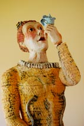
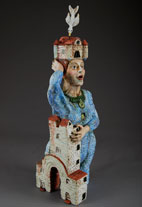
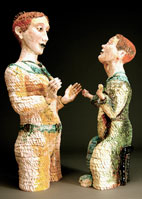

Florabella

Florabella (detail)

Bird Lady of Banff

The Touch
Christine Klinger
Studying painting and sculpture as an undergraduate, California sculptor Cheryl Tall found herself getting more involved with clay. Since graduate school, Tall has been creating large-scale, modular clay sculptures. She recently caught the eye of the American Museum of Ceramic Art (AMOCA) in Pomona, California. In 2007, the museum invited Tall, along with fourteen other women artists from across the United States, to show three of her pieces in Form and Imagination: Women Ceramic Sculptors.
AMOCA Director Christy Johnson describes Cheryl Tall's work as "togetherness and apartness… As an expression of duality, many of her works portray two or more figures in close proximity, sometimes with heads that seem to come from the same body. She effects co-joining as a visual means to explore the tensions and strengths inherent in close relationships… Tall's art seems to demand analysis, inviting the viewer to apply free-association and personal experience to interpret her works."
This author, familiar with Tall's work and reputation, had the opportunity to take a one-day workshop from her in 2006 at Cuesta College in San Luis Obispo, California. After absorbing her words and photographing her at work, I began putting a few of her techniques to use in my teaching and in my own work. After awhile, I wanted to know more about how she creates, works, and thinks. So, I caught up with Ms. Tall in her Leucadia, California studio to learn more.
Christine Klinger: When and how did you get started in clay?
Cheryl Tall: Age 17, high school art class. Then I went to college, and majored in painting and art education. I didn't try clay again for another 10 years. I was married and expecting my second son. I signed up for a wheel-throwing class at the Ceramic League of Miami, and fell in love with clay.
Klinger: Did you expect clay to be such an important medium in your life?
Tall: I've always liked all types of art, and have taken classes in painting, drawing, jewelry making, weaving, batik, printmaking, welding, set design, etc. It was difficult to choose just one medium, but I wanted to create a consistent body of work, a slide page of 30 strong pieces. Clay fit the bill because it could be painterly, it could be fine art sculpture, and it could also be roof tiles, jewelry, dishes and plates. There were so many possibilities with clay that it has kept me busy for years with always something new to learn.
Klinger: What educational paths have you taken?
Tall: I have a BFA in painting and art education. I also have taken many classes with talented and famous clay artists, like Judy Moonelis, Christine Federighi, Paul Soldner, Patty Warishina, Adrian Arleo, etc. Fifteen years after I completed my BFA, I returned to college to get my Master's degree in Fine Art and Ceramics at the University of Miami. I found this to be invaluable, in that it helped define my path and my body of work, and helped me be able to present and talk about my work professionally.
Klinger: I know you like to work large. Why?
Tall: Sometimes my surroundings seem boring to me, and I want to create an alternative reality. By creating life-size or larger-than-life-size sculptures, I can change the space.
Klinger: What would be an average-size piece? What's the largest so far? And do you know before you begin the piece what size it will be?
Tall: An average-size piece is 24-36" high. The largest piece so far has been 5' feet tall. Over the years, I have developed several different types of sculpture that I make — head and shoulders, full-sized body standing, waist up with arms and head, kneeling figure, etc. I know before I start which one of these it will be. And I generally know the motif — teapot, orange blossom, memories, etc. From there on out, it becomes very creative and I let the clay tell me the personality and final details of the character.
Klinger: Much of your work seems to have a regal quality to it — kings and queens and such. What has inspired this?
Tall: Technology. I am like many artists, in that I have struggled to learn to use the computer, learn Photoshop, cell phones, how to make a DVD, etc. I am still amazed when I fly in an airplane and it doesn't fall out of the sky.
I started thinking about how fast our technology has advanced. Only 100 years ago, telephones, electricity, cameras and cars were very new. And 800 years ago, people grew all their own food, made their own clothes, the few books were hand-written, and a letter might take six months to be delivered. Now we find out instantly if something has happened on the other side of the world! So I use the medieval characters in modern situations to contrast 'then and now'.
Klinger: How has your style evolved over the years?
Tall: My style has always had an element of fantasy, but I have had several distinct periods in clay. The first was wheel throwing, and selling these products at outdoor art shows in Florida. The second was hand building large bowls and vessels, embellishing them with scraffito, sprigs and carvings, and selling them through the interior design market. The third was an exploration of architectural forms constructed by the slab technique. And the fourth was discovered in grad school in the early 90's when I started combining figurative and architectural forms and using a very loose coil-building style.
Klinger: What has been your professional career path?
Tall: Outdoor art shows, interior design markets, fine craft galleries, and now fine art galleries and museums. I have been fortunate to have my work purchased by prominent collectors, and to be in the permanent collections of museums.
Klinger: What are some challenges and pitfalls you have seen?
Tall: How to run a business! I've had to create forms and systems on my computer for keeping track of a large inventory, and a very varied schedule. There's also the selling and presenting your work part of being an artist. Often, I would rather just be in the studio creating new work. But the artist has to wear all the hats — creator, salesperson, office manager and bookkeeper, janitor and publicist.
Klinger: Tell me about your old studio and your involvement in the Escondido art scene.
Tall: We (Tall and her husband, Bruce Tall) bought a storefront building in Escondido, California in the blossoming arts district next to the North County branch of the Mingei Fine Crafts museum. It was in derelict condition; for 3 years, I was the building manager, the landlord, the art event programmer, the renovations supervisor, etc. I also had my own studio there, and because it was constantly open to the public, I had to keep it very clean! I spent a lot of time doing administration, and less time making my own art.
It was a very good experience in that I learned a lot, and the building is still open to the public as an art center. (We still own the building, but) we rent the whole thing to one tenant, who runs it. And now I have a small studio in Leucadia, about 10 minutes from my home.
Klinger: Why did you decide to move your studio?
Tall: This studio is on a main road, but it is just a one-person operation, so the opening hours are very limited. This gives me fewer sales, but lots of time to work.
Klinger: Do you still teach workshops?
Tall: I teach clay classes every Tuesday at my studio, and painting classes on Thursdays at the studio. I travel to teach two-day workshops at colleges and art centers three to four times a year. These workshops encompass my personal techniques in quick coil building and large-scale sectional sculptures, glazing, and finishing techniques.
Klinger: You've gotten a lot of attention in the past, say, five years — how has that come about? And how has this affected you?
Tall: I have been very fortunate to get a number of magazine articles written about me, and to be included in seven books. At first, I seriously cultivated these things, but now more and more offers are coming to me. It keeps me busy and interested. This summer, I have been selected to attend an artist residency at the International Ceramics Studio in Hungary.
Klinger: How did your participation in the AMOCA show come about?
Tall: I was invited to show in the exhibition: Form and Imagination, which focused on fifteen top women ceramic artists who work in a figurative vein. I was very flattered and happy to become involved with the museum, which is one of the few museums centered solely on the ceramics arts. The staff there, including Christy Johnson, Director, and Ansley Davis, Curator, is very professional and handled everything in a first-rate manner.
Klinger: What has been your relationship with galleries over the years?
Tall: I have enjoyed some very good gallery relationships, both in Florida and now in California. When I first started, I sold my work through outdoor fairs. This was an excellent way to get started, as it helps you build up your contact list and puts immediate money in your pocket. As my work became larger and more expensive, the galleries were helpful in presenting it to a more select market.
Klinger: Where are you represented now?
Tall: I have been working with four major (California) galleries for the past five years: Sherwood in Laguna Beach, Trios in Solana Beach, and Coda in Palm Desert and Lillian Berkeley in Escondido (now closed).
Klinger: As an artist, and an educator, who have been some of your inspirations?
Tall: Probably too many to name, but here are a few: Teachers — Christine Federighi, Judy Moonelis, Ron Fondaw. My subject matter often includes architectural and figurative elements. Influences include Surrealism, Expressionism, Pop Art, and Funk Art, eleventh century medieval art, folk art, mythology and Primitive Art. Influential artists include Robert Arneson, Andy Goldsworthy, Viola Frey, Adrian Arleo, Paul Klee, Giorgio De Chirico, Oskar Kokoschka and Giselbertus.
Klinger: What advice can you give us aspiring clay artists?
Tall: Keep a notebook or sketchbook. Take all the classes you can. Check out art books from the library. Set aside a certain time period every day, whether it's one hour or five hours, to do your art. Join a co-op art gallery and place work in their exhibitions. Network. And persevere!
Information
Cheryl Tall
760-479-0399
www.cheryltall.com
Christine Klinger
Christine Klinger is a clay sculptor, writer and photographer.
www.klingerart.com
AMOCA
www.ceramicmuseum.org
www.ceramicmuseum.org/form-and-imagination-archive.htm
All photographs copyright © Bruce Tall.